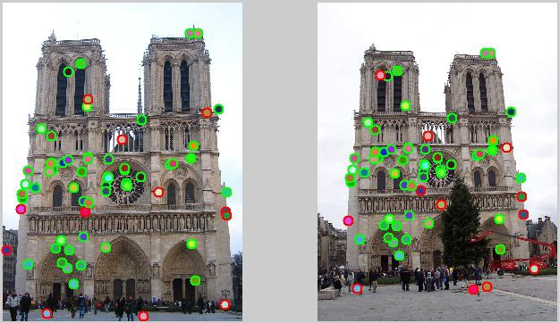
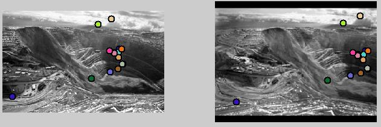
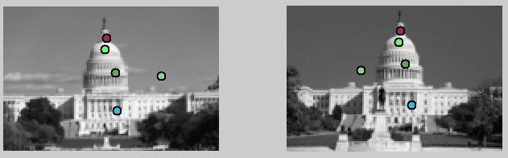
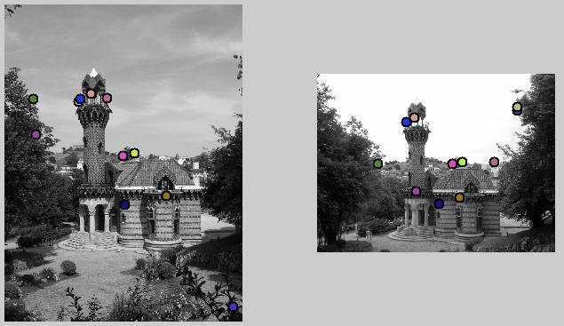
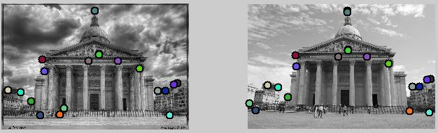

This project implements feature detection and matching, a fundamental part of many computer vision applications. Here, I used instance-level matching, which involves matching features from multiple views of the same scene. The three main parts of feature matching involve detecting interest points, describing them, and finally matching them. The Harris Corner detector was used to find interest points and a modified version of the SIFT pipeline was used to describe and match two features from different images.
This image shows 70 matches found by my feature matching algorithm. The ones outlined in green are correct matches. These images exhibit an 84% accuracy rate
1500 interest points of the Notre Dame image shown in a scatter plot
The first part of feature matching is finding good points to track, which is important in ultimately determining correspondences. I used a version of the Harris Corner detector which takes local maxima as interest points. These are found by looking at rotationally invariant scalar measures, derived from the auto-correlation matrix. The auto-correlation matrix is found by comparing parts of an image with itself to determine how stable it is. The auto-correlation matrix at each point is found by looking at the image gradients in the x and y directions. The gaussian of the image gradient in the x direction squared is in the upper left coordinate, the gaussian of the image gradient in the y direction squared is in the lower right coordinate, and the gaussian of the product of the two is on the diagonal. Instead of using direct eigenvalue analysis, I took the det(A)-.03*trace(A)^2 as my strength measure for each pixel. This method downweights edge-like features where there is a large difference in the eigenvalues. After calculating this value for each pixel, I used the colfilt function to find local maxima. I also thresholded the interest points that I detected.
After calculating interest points, I used a SIFT-like descriptor to create a 128-dimensional vector to describe each point. This descriptor was based fundamentally on the image gradient orientation. I calculated the image gradients in the x and y directions. Using this as my x and y components, I calculated the magnitude and angle. I then wrote my own function, sort_bins.m, to create a histogram based on the orientation. I sorted based on the angle and then added the magnitude of the gradient to the appropriate bin. I had 8 orientation bins in total (0 to 45 degrees, 45 to 90 degrees, and so on). I had 16 total cells for which I created these histograms, and then I appended them together. The histograms closest to the interest pixel were given greater weight. Each of my cells consisted of a 4x4 grid of pixels. I normalized this 128-dim vector, raised each element to the .5 power, and then normalized again to improve accuracy. SIFT is often regarded as a very accurate descriptor. Mikolajcyz and Schmid (2005) found that SIFT performed second best only to GLOH, Gradient location-orientation histogram, which uses log-polar bins instead of square bins.
An example of matching features from two different images of a house. Colors indicate the matches across both images
The final step involves matching features. I used the nearest neighbor distance ratio test. This test involves comparing each feature from one image with every feature in another image. The top two closest matches are found and their ratio is computed. Small ratios mean that the feature is a good match with the closest feature while large ratios imply that both matches are close to the original input and therefore not necessarily a good match. I used a ratio of .545 to threshold my matches. I used knnsearch to speed up the computation of my functions and looked at the euclidean distance between features.
In order to find the best matches, I tried changing several parameters. In my interest point detector function, I changed the value of alpha, used in computations with the auto-correlation matrix. I found that using alpha=.2 was the best value. On the Notre Dame images, increasing alpha from .2 to .6 decreased the accuracy by 23%. I also changed the value at which I thresholded the image. For the Notre Dame images, I was able to find that the values of my non-maximal suppression should be thresholded at .00003. For the other images, I sorted by strength of the confidences and then took the first 2000-5000 interest points.
In writing my feature descriptor function, there were also several changes that I implemented. I tried changing the size of each cell to 3x3 pixels rather than 4x4. Interestingly, I found that this worked better when evaluating very few matches (around 10-30 matches), which I controlled by decreasing the number of interest points fed in. However, for a larger pool of matches, using a 3x3 decreased my accuracy by 13%. I also found that weighting the cells closest to the interest pixel greatly improved the accuracy. When I weighted the four center cells by 1.4 (compared to the border 12 which had a weight of 1), I jumped from 53% accuracy to 79% accuracy. I found that 1.4% was the weight that worked best, as increasing the weight from that point, decreased the accuracy. Finally, I found that raising each element to the .5 power increase my accuracy by a few percentage points, which depended on the exact number of matches.
Overall, my images exhibit an 84% accuracy rate. There is a tradeoff between accuracy and the number of matches: if I decrease the number of matches (either directly or by decreasing the number of interest points I take), I can get up to 95% accuracy. My feature matching pipeline also works for other images, shown below, with varying levels of accuracy. Since my detector is not rotationally or scale invariant, these types of changes tend to have the biggest impact on the accuracy of the matches. However, for images at the same scale and orientation, my baseline feature matching algorithm works well.
For the images below, only a handful of matches are shown because-unlike the Notre Dame images-no accuracy evaluation was performed, so it is easier to notice actual matches with a fewer number. Instead, colors indicate matches across pictures.
Matching performed on two different views of Kennecot Copper Mine
Only five matches shown on the US Capitol to easily demonstrate features
Matching performed on the Capricho Gaudi, which is less accurate since my feature detector does not handle rotation and scale
Matching performed on the Pantheon